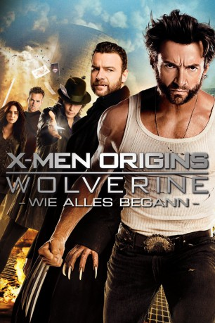
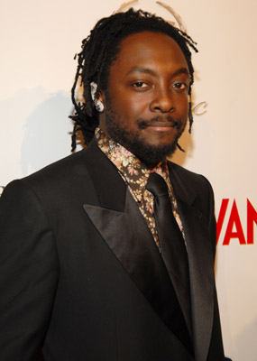
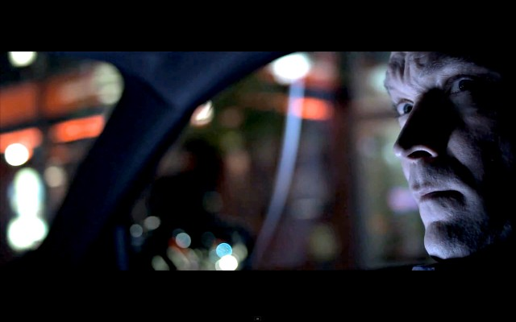
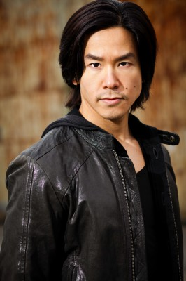

#731 X-Men 4 - Origins: Wolverine
 
 IMDB-Wertung: 6.6 / 10
IMDB-Wertung: 6.6 / 10  Metascore: 40
Metascore: 40 
James Howlett verfügt über die seltene Gabe, sich in Wolverine verwandeln zu können. Er ist nicht der einzige, in dem übermenschliche Kräfte stecken. Auch Victor Creed alias Sabretooth hat sie. Beide verbindet eine enge Beziehung, bis Wolverines Freundin durch Victor umkommt. Fortan ist er auf Rache aus und tritt dem Weapon X-Programm bei, um eine lebende Waffe zu werden. Dort lernt er weitere Mutanten kennen.
Jahr: 2009
Dauer: 107 Minuten
FSK: 16
Land: USA Studio: 20th Century FoxTonspuren: DTS - ,
Untertitel: Deutsch, Englisch,
Auflösung: 1080p (1920x816) Größe: 12800 MB
Genre: Action, Abenteuer, Sci-Fi, Thriller
Regisseur: Gavin Hood
Drehbuch: David Benioff, Skip Woods
Soundtrack: Harry Gregson-Williams
Darsteller:
 Hugh Jackman als Logan / Wolverine
Hugh Jackman als Logan / Wolverine Liev Schreiber als Victor Creed
Liev Schreiber als Victor Creed Danny Huston als Stryker
Danny Huston als Stryker-  Will.i.am als John Wraith
 Lynn Collins als Kayla Silverfox
Lynn Collins als Kayla Silverfox Kevin Durand als Fred Dukes
Kevin Durand als Fred Dukes Dominic Monaghan als Chris Bradley / Bolt
Dominic Monaghan als Chris Bradley / Bolt Taylor Kitsch als Remy LeBeau
Taylor Kitsch als Remy LeBeau- Daniel Henney als Agent Zero
 Ryan Reynolds als Wade Wilson
Ryan Reynolds als Wade Wilson- Tim Pocock als Scott Summers
- Julia Blake als Heather Hudson
 Max Cullen als Travis Hudson
Max Cullen als Travis Hudson- Troye Sivan als James
- Michael-James Olsen als Young Victor
- Peter O'Brien als John Howlett
- Aaron Jeffery als Thomas Logan
- Alice Parkinson als Elizabeth Howlett
- Philip A. Patterson als Firing Squad Leader
 Adelaide Clemens als Carnival Girl
Adelaide Clemens als Carnival Girl- Karl Beattie als School Child
- Tom O'Sullivan als Logging Supervisor
- Myles Pollard als Phelan
- Matthew Dale als Surgeon
- Nathin Butler als Male Nurse #1
- Asher Keddie als Dr. Carol Frost
 Socratis Otto als Lead Technician - Alkali Lake
Socratis Otto als Lead Technician - Alkali Lake James D. Dever als Platoon Leader
James D. Dever als Platoon Leader- Tahyna Valentina MacManus als Kayla's Sister / Emma
- Daniel Negreanu als Poker Player
- Alexandra Davies als Woman of the Night
- Rob Flanagan als Driver
- Hakeem Kae-Kazim als African Businessman
- Alison Araya als Teacher
-  Eric Breker als Special Forces Commander
 Mike Dopud als Vietnam Army Officer
Mike Dopud als Vietnam Army Officer Beatrice King als Waitress
Beatrice King als Waitress Panou als Tank Soldier
Panou als Tank Soldier-  Johnson Phan als Vietnamese Man
 Elizabeth Thai als Vietnamese Woman
Elizabeth Thai als Vietnamese Woman- Warwick Young als Helicopter Pilot
 Scott Adkins als Weapon XI , uncredited
Scott Adkins als Weapon XI , uncredited- Dennis Kreusler als Soldier , uncredited
- Paul Padagas als Warden , uncredited
- Chris Polzot als Mutant , uncredited
- Suzie Steen als Carnival Mom , uncredited
 Patrick Stewart als Professor Charles Xavier , uncredited
Patrick Stewart als Professor Charles Xavier , uncredited- Ian Thompson als School Bus Driver , uncredited
- Katherine Wallace als Mutant , uncredited
- Anthony Gee als Carnival Guy
Datei: X:\Comic-Filme\X-Men\X-Men 4 - Origins Wolverine (2009, FSK16, 1920x816).mkv seit 16.03.2015
Festplatte: Comicverfilmungen+MusikCD
 Es gibt insgesamt 17 Filme in der Gruppe 'Comic-Filme\X-Men'
Es gibt insgesamt 17 Filme in der Gruppe 'Comic-Filme\X-Men'